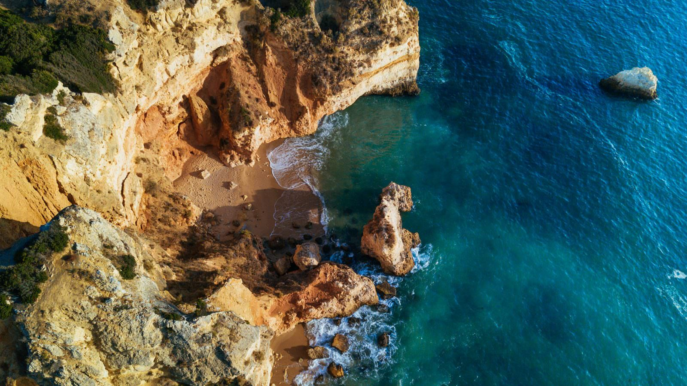
Visitare il Portogallo in macchina è un’emozione fortissima. È un Paese diverso da tutti gli altri Stati europei, è unico per la sua storia, natura e per il clima, fortemente influenzato dall’Oceano Atlantico.
Questo viaggio è stato pensato: ci siamo informati, abbiamo letto guide, recensioni e soprattutto tanti libri di autori portoghesi o di viaggiatori, che hanno esplorato questo magnifico Paese prima di me e Fede. Nonostante questo, sono stai molti gli imprevisti e spesso abbiamo deciso di fare deviazioni fuori programma.
Il Portogallo era uno dei nostri sogni nel cassetto, con un po’ di tempo a disposizione l’abbiamo realizzato.
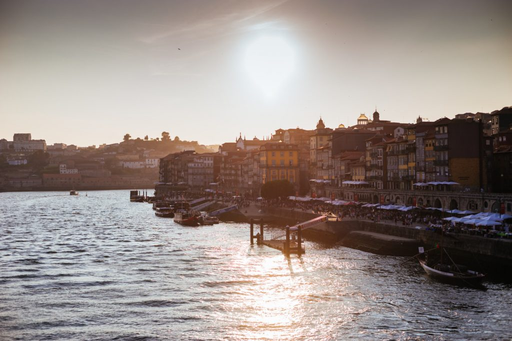
COSA STAI CERCANDO?
- Perché partire per il Portogallo? Trova una motivazione valida per fare la valigia!
- Le tappe del viaggio in Portogallo in macchina di Kiwi: trova conferme e nuove mete da considerare
- Autostrade in Portogallo: come funziona il pedaggio autostradale?
- Cosa mettere in valigia?
- Dove abbiamo alloggiato?
- Libri prima di partire per il Portogallo in macchina: qualche libro che riteniamo utile e dilettevole per organizzare il vostro viaggio
Perché partire per il Portogallo?
Certamente è un Paese che ultimamente incuriosisce i turisti, avete presente quei periodi in cui tutti sono a Parigi, Gallipoli, Porto Rotondo o Berlino? Ultimamente va “di moda” il Portogallo, così leggo nelle riviste e sento dire dagli amici o conoscenti con cui parlo per strada.
La verità è che il Portogallo mi ha sempre affascinata perché punto di partenza di molte scoperte. Da Lisbona e da Porto sono partite rispettivamente le navi di Vasco da Gama e Enrico il Navigatore alla scoperta di nuove terre, sapori, culture e tradizioni. Fin da bambina sono stata affascinata da queste storie di mare, oceano e scoperte; oggi sono riuscita a colmare parte della mia curiosità andando alla scoperta di questo Paese che ha un legame fortissimo con l’oceano, mia fonte d’ispirazione e di vita.
Se siete curiosi, avventurieri, appassionati di storia o innamorati della natura, il Portogallo in macchina è il viaggio che fa per voi, dovete solo partire.
Le tappe del viaggio in Portogallo in macchina
Il nostro viaggio è iniziato a Porto ed è terminato a Lisbona, facendo sosta sia nei paesi dell’entroterra sia in quelli costieri, fino a raggiungere l’Algarve.
Nonostante l’auto sia stato il nostro mezzo principale, nelle grandi città abbiamo preferito girare a piedi: tutte le attrazioni sono facilmente raggiungibili camminando o utilizzando i mezzi pubblici. Se lo dovessi rifare, cercherei di sfruttare di più il servizio ferroviario locale.
Giorno 1-2-3: Porto
Porto è la seconda città più sviluppata del Portogallo ma riserva ancora l’atmosfera tradizionale con un tocco di design. Porto è una città fantastica e ancora molto autentica.
Dopo essere atterrati all’Aeroporto Francisco Sá Carneiro, per raggiungere il centro di Oporto, o Porto, prendete la linea E viola della metropolitana.
Porto bisogna viverla salita dopo salita, azulejos dopo azulejos e casa dopo casa. Le strade strette si arrampicano tortuose dal fiume Douro fino alla Torre dos Clérigos; durante la camminata le note del fado non lasciano mai solo il visitatore, assieme al profumo di sardine e francesinha.
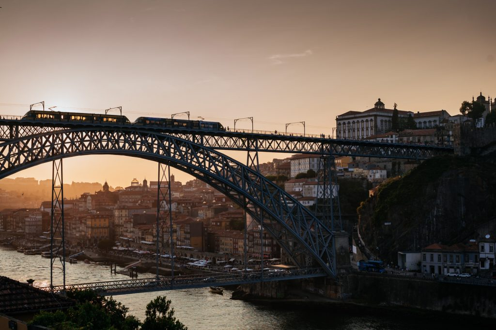
Tra le alte case arroccate sulla collina e le chiese decorate con fantastici azulejos, si trovano opere architettoniche di rilevante importanza contemporanea: Casa da Música è la sede di 3 importanti orchestre portoghesi mentre la Fundação de Serralves è un interessante centro di arte contemporanea e casa di uno dei migliori esempi di Art déco.
A Porto non dovete perdere i tramonti dalla Ribeira, dal Ponte Dom Luis I oppure dal Jardim do Morro, sorseggiando un calice di Porto Tinto, rimangono nel cuore.
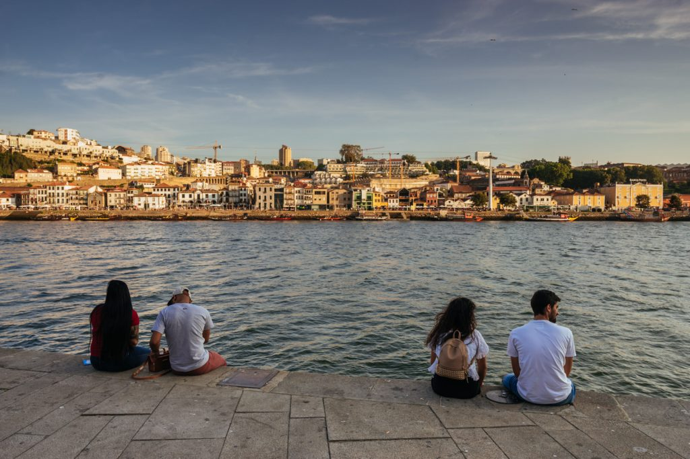
In città ci siamo spostati a piedi oppure utilizzando la metropolitana, i tram e gli autobus. I prezzi dei biglietti variano in base alla tratta che dovete effettuare. L’unico accorgimento che mi sento di darvi è che spesso, guardando la cartina, le distanze sembrano dilatate rispetto alla realtà.
Porto è a grandezza d’uomo, accogliente e follemente romantica; tre giorni pieni sono perfetti per visitarla con calma.
Se non hai molto tempo da dedicare alla città, il Free Tour di Porto ti porterà alla scoperta dei luoghi più belli, lo puoi prenotare cliccando qui.
Dove e cosa mangiare a Porto?
Per dire di essere stati a Porto dovete assolutamente mangiare la Francesinha al Café Santiago, fare colazione con le Eclair della Leitaria a Quinta do Paço e se avete coraggio mangiate la trippa locale, piatto dal quale prendono il nome gli abitanti di Porto – tripeiros.
Prima di partire dovete assaggiare il vino Porto Tinto, è un vino molto forte, che spesso dai locali viene ordinato con il ghiaccio per assaporarlo più piacevolmente, e la Sangria Bianca.
Giorno 4: Mattina a São Jacinto
La partenza dalla città di Porto ha decretato l’ufficiale inizio del nostro tour del Portogallo in macchina. La mattina abbiamo ritirato l’auto e siamo partiti in direzione sud, verso la Riserva Naturale delle dune di São Jacinto.
Per raggiungere la nostra meta abbiamo deciso di passare per Ovar, l’alternativa era quella di arrivare a Forte da Barra e usufruire del traghetto per São Jacinto.
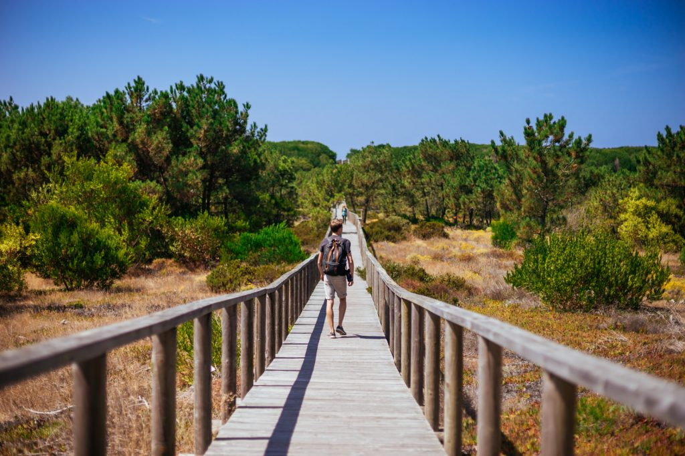
La riserva inizia presso l’ufficio informazioni che si trova lungo la strada; chiedete la mappa del parco ed iniziate ad esplorare questa meravigliosa oasi, fino a raggiungere l’oceano.
Il percorso ad anello è lungo circa 7 km e ha la durata di circa 3 ore; in alternativa potete scegliere di seguire percorsi più brevi.
Il sentiero vi porta in mezzo ad una foresta di pini, ad attraversare vasti prati fino a raggiungere le meravigliose dune oceaniche, un habitat protetto perché essenziale per la vita.
Questa pausa naturalistica è servita per farci rilassare, ci ha rigenerato dopo 3 giorni passati in città.
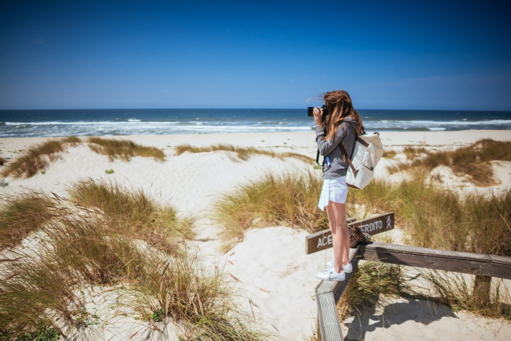
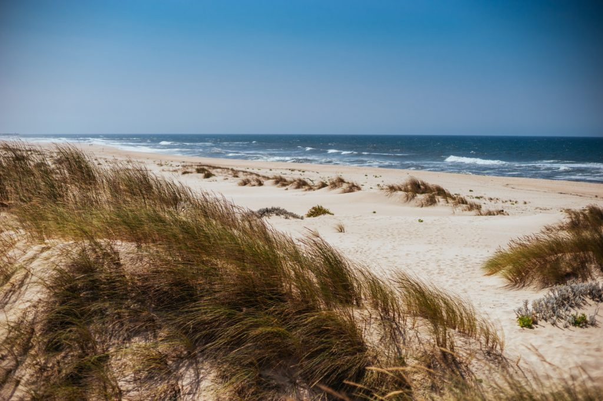
Giorno 4: Pomeriggio ad Aveiro
Finita l’escursione alla riserva, siamo risaliti in macchina in direzione Aveiro. Durante il tragitto ci siamo fermati per sentirci parte della quotidianità lagunare. Tra pescatori, campeggiatori e bambini che giocavano nell’acqua siamo rimasti mezz’ora incantati, seduti sulla banchina di un porticciolo.
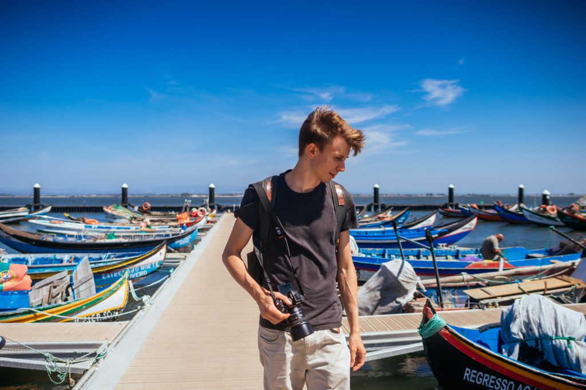
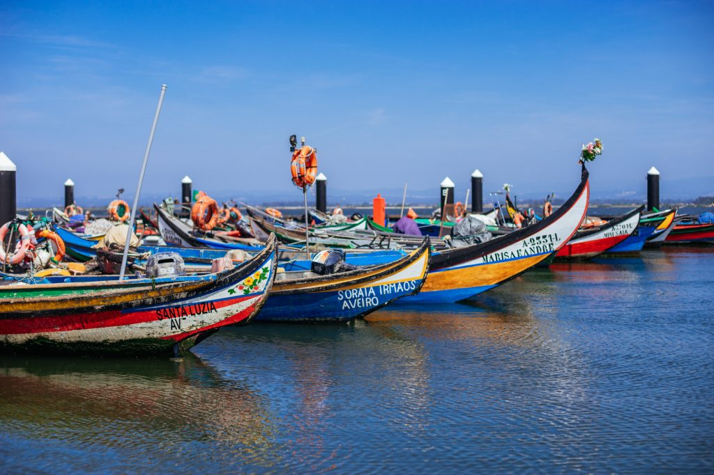
Famosa per i moliceiros, tipiche imbarcazioni colorate dedite anticamente alla raccolta dei sargassi, oggi utilizzate per tour turistici, Aveiro merita la sosta.
La cittadina è caratterizzata da stradine strette e da caratteristiche case, spesso decorate con moderni murales.
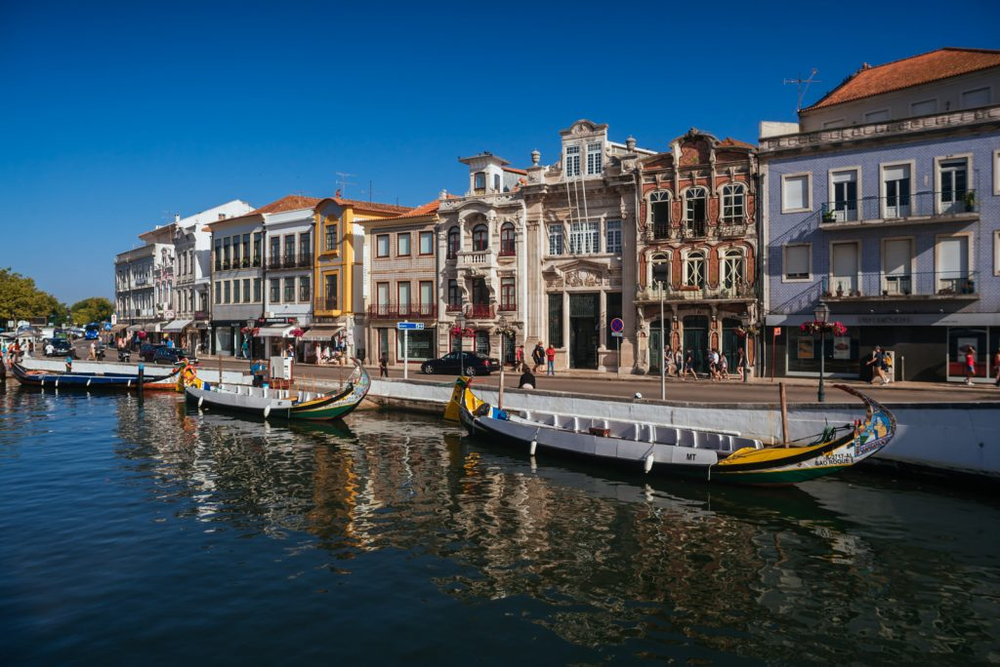
Dovete assolutamente visitare il mercatino delle pulci e fare una sosta alla “Confeitaria Peixinho” per assaggiare i migliori Ovos moles di tutto il Portogallo.
Gli Ovos moles sono dei dolcetti all’uovo tipici di Aveiro la cui origine risale al 1800, quando la zona era frequentata dalle suore dei conventi limitrofi. Se visitate Aveiro senza assaggiare la sua storia è come se non l’aveste mai vista.
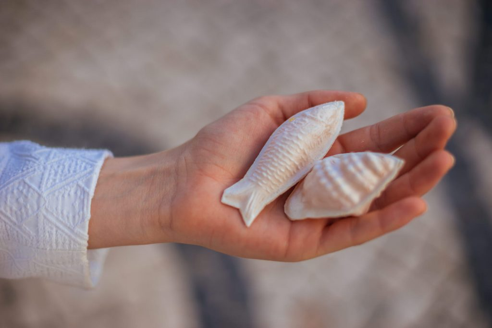
Il nostro consiglio è di sostare ad Aveiro a dormire e ripartire l’indomani per raggiungere l’oceano.
Visto il poco tempo a disposizione, potete affidarvi ad una guida locale per visitare la cittadina (il tour dura circa un’ora e potete prenotarlo qui), per poi godervi qualche ora perdendovi tra le vie, i mercatini e negoziati.
Giorno 5: Costa Nova
La quarta meta del nostro viaggio in macchina in Portogallo è stata Costa Nova, nota località balneare portoghese, frequentata soprattutto da locali e qualche turista. Il paesino si trova tra l’Oceano Atlantico e la laguna del distretto di Aveiro.
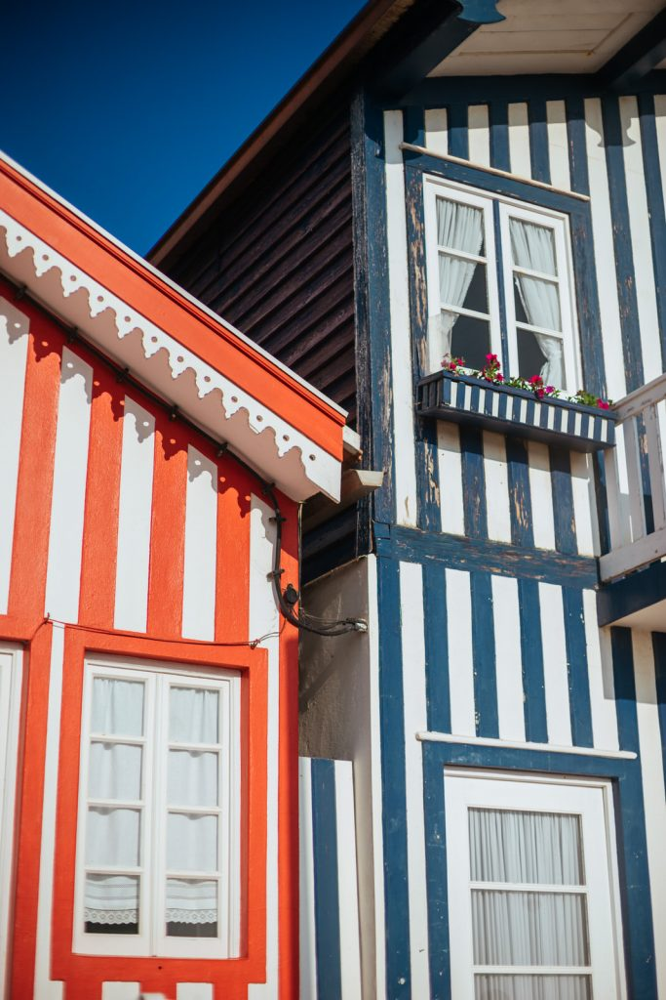
Nota ai turisti per le sue casette a righe colorate, Costa Nova è una meravigliosa meta per il surf e gli amanti dell’oceano. L’ampia spiaggia ospita centinaia di persone che giocano a beach volley, prendono il sole oppure si divertono a cavalcare le onde, imitando i più esperti. Se associate il Portogallo alla vita di mare e al surf allora Costa Nova è la vostra meta.
L’acqua dell’oceano è molto fredda durante tutto l’anno, ma d’estate è fattibile prendere il sole e passeggiare sul bagnasciuga in tranquillità.
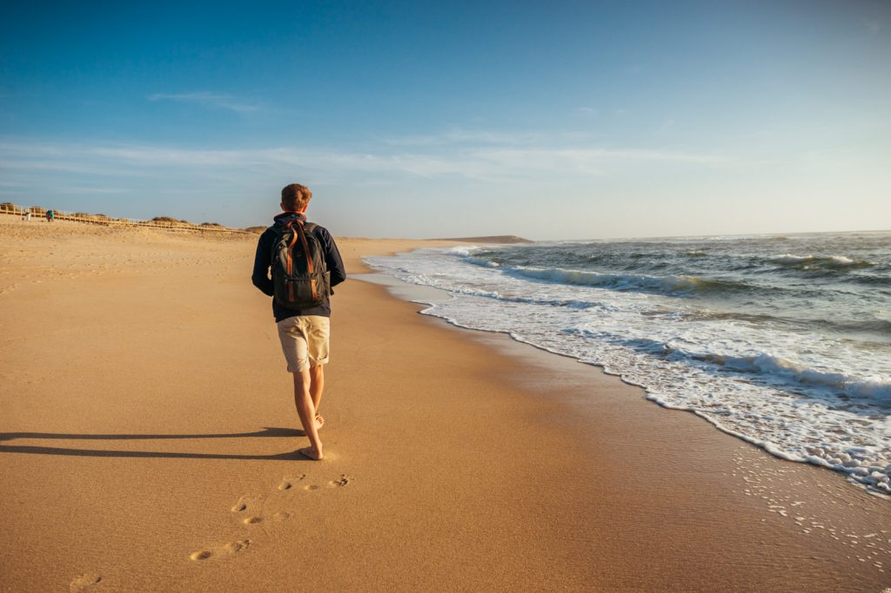
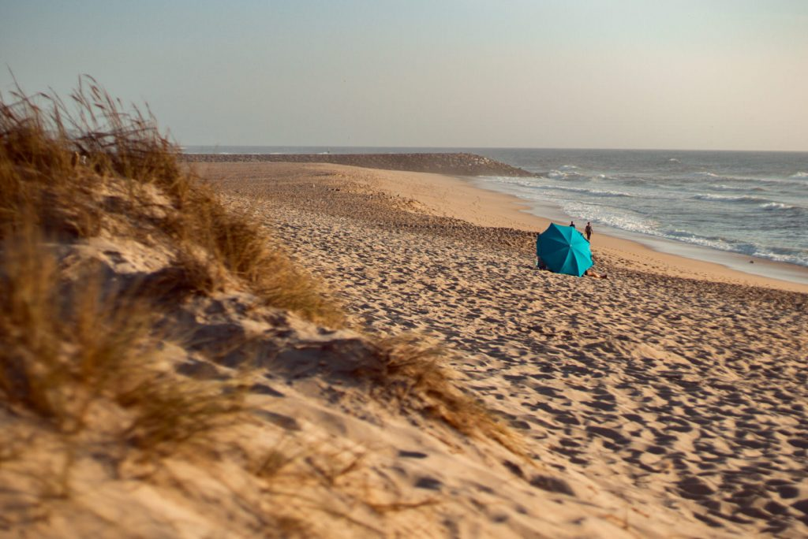
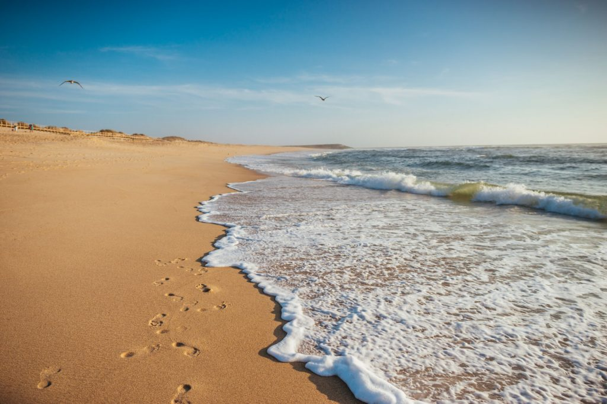
A Costa Nova abbiamo assistito al tramonto più bello di tutto il viaggio in Portogallo in macchina; il cielo era infuocato, l’acqua delle onde disegnava curve sul bagnasciuga mentre i gabbiani volteggiavano sfiorando l’acqua. Faceva freddissimo a causa del forte vento, ma grazie alle giacche a vento e agli asciugamani abbiamo potuto fare parte di questo meraviglioso spettacolo della natura.
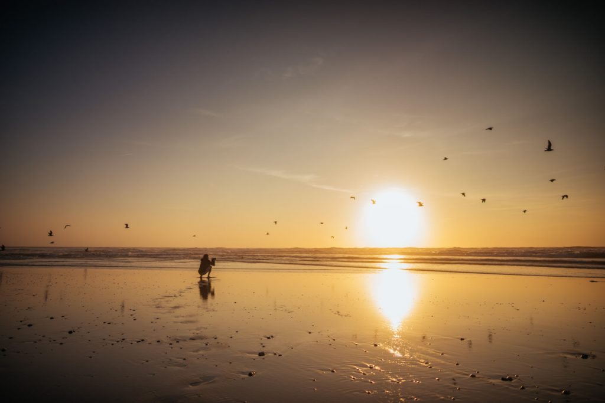
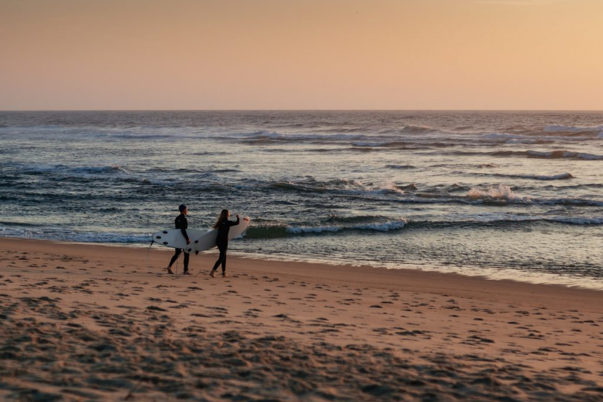
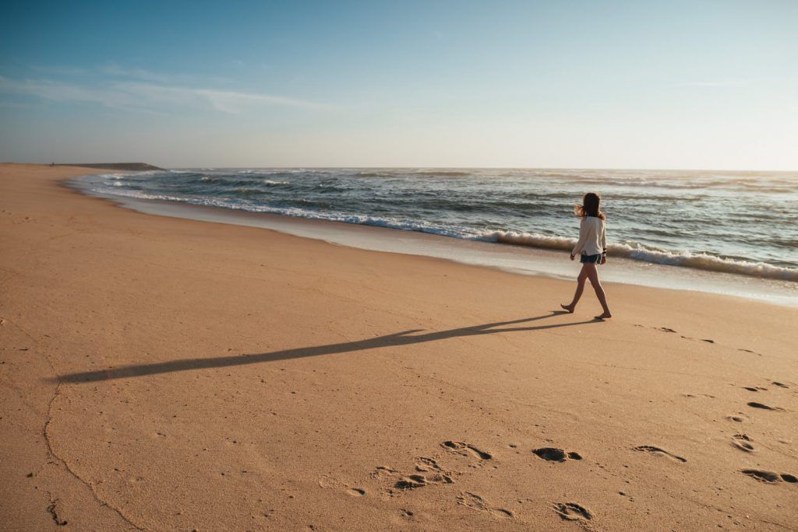
Giorno 6: Mattina a Coimbra
L’indomani siamo partiti per Coimbra, città nell’entroterra famosa perché sede dell’Università più antica e grande di tutto il Portogallo.
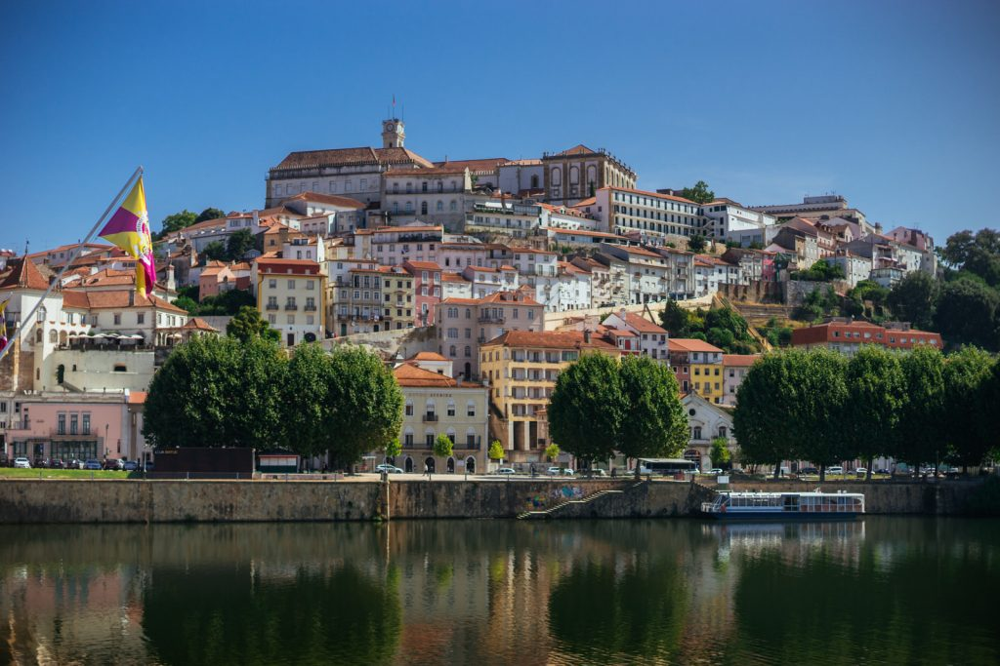
Coimbra si differenzia completamente dalle precedenti località per il suo clima cittadino e le sue calde temperature estive.
Parcheggiate gratuitamente l’auto presso il parcheggio del Convento di San Francesco e prima di attraversare il ponte visitate l’antico Monastero di Santa Clara-a-Velha. Attraversate il ponte sul fiume Mondego e lasciatevi trasportare dalla curiosità tra le stradine del paese fino a raggiungere la cima della collina, dove si trovano l’Università di Coimbra e la Biblioteca Joanina, una delle più belle biblioteche al mondo.
La vostra passeggiata sarà spesso accompagnata dalle note del fado di Coimbra, suonate dai giovani universitari in veste tipica; un’esperienza unica durante il vostro viaggio in Portogallo in macchina.
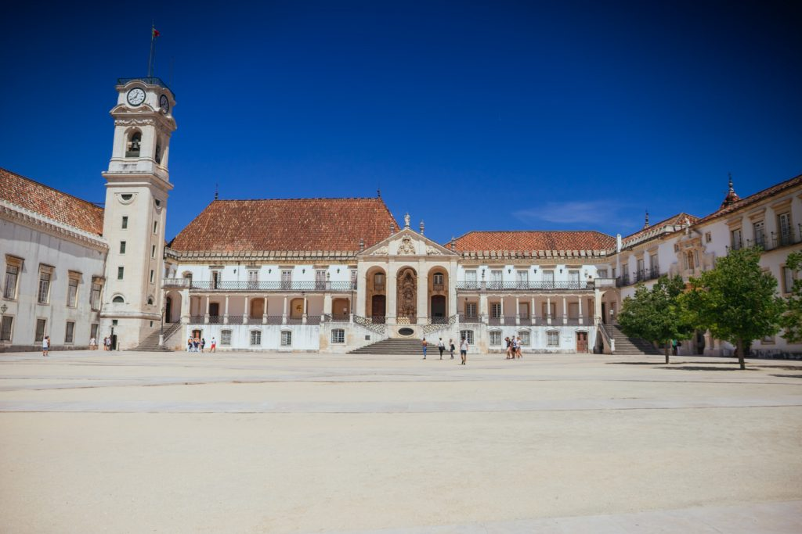
Vicino Coimbra merita la visita il Sito Archeologico di Conimbriga, antica città romana del Portogallo; il sito più conservato di tutta la penisola iberica.
Giorno 6: Pomeriggio a Tomar
La leggendaria cittadina di Tomar è una bomboniera tra le colline del Distretto di Santarém, nel torrido entroterra portoghese. Parcheggiate l’auto fuori dal centro di Tomar per assaporare al meglio il paesino.
L’accesso pedonale alla città avviene attraverso il passaggio di un ponte, che passa sopra le dolci acque del Rio Nabão, che termina all’interno di un romantico giardino .
Il centro di Tomar è piccolino ma ricco di negozi e ristorantini tipici; la vera bellezza di questo paesino si ritrova nei dettagli dei balconi fioriti, delle strade pulite e degli antichi edifici ancora candidi e tenuti alla perfezione.
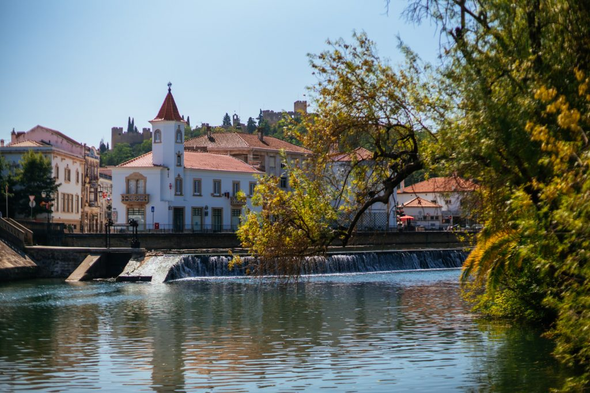
Uno dei principali motivi per visitare questa cittadina si ritrova nella sua storia. Tomar fu un’antica sede dell’Ordine dei Templari; ogni chiesa, convento, monastero, cattedrale e statua lo ricordano e rendono la città affascinante e stimolante per l’intelletto.
Usciti dal centro di Tomar prendete macchina e salite in cima fino al Castelo dos Templlàrios e al Convento de Cristo, principali opere rinascimentali portoghesi e ricche di misteri, leggende e moltissima storia antica e moderna.
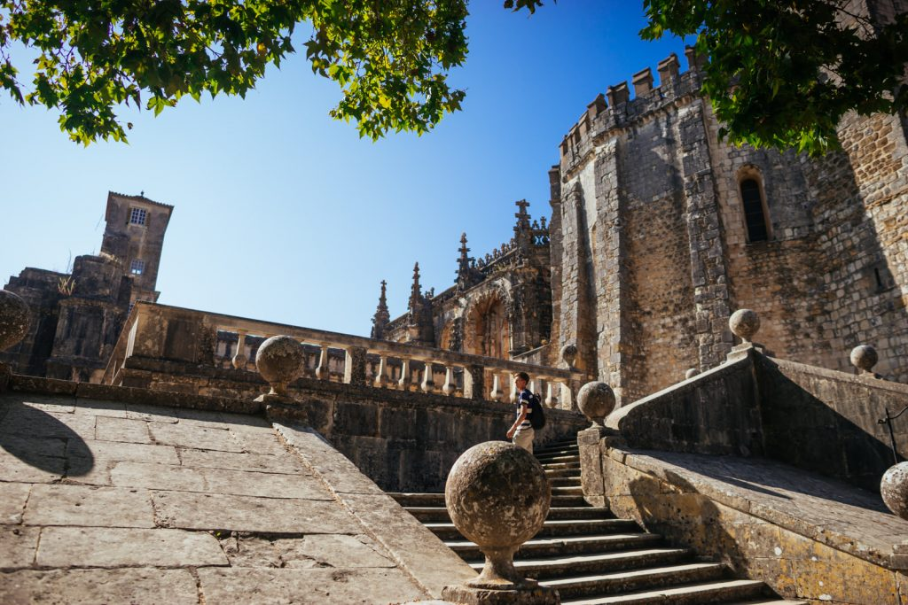
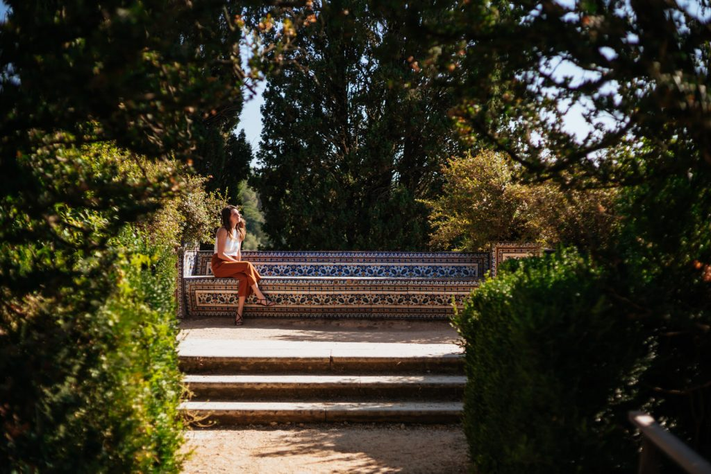
Giorno 7: Nazaré
Da Tomar a Sintra sono circa 2 ore di auto, l’unica tappa che ci siamo permessi di fare è stata la cittadina di Nazarè. Questo lungo tragitto in auto è stato premeditato e non per motivo di assenza di località da vedere; la zona tra Tomar e Sintra vale da sola un viaggio, visiteremo più a fondo il paradiso dei surfisti in un’altra occasione. Potete aggiungere al vostro tour Ericeira, Peniche e le isole Berlengas.
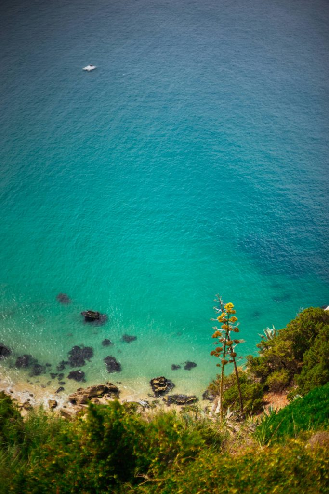
Nazaré è famosa in tutto il mondo: qui si creano naturalmente le onde più alte del pianeta e i migliori surfisti fanno a gara per cavalcare la più alta.
Le onde si formano per una questione di morfologia del fondale di fronte al promontorio del faro di Nazaré; in questa zona si sviluppa un profondo canyon che arriva praticamente fino alla costa permettendo all’acqua di incanalarsi con tutta la sua potenza e di frangere solo all’ultimo sulla costa.
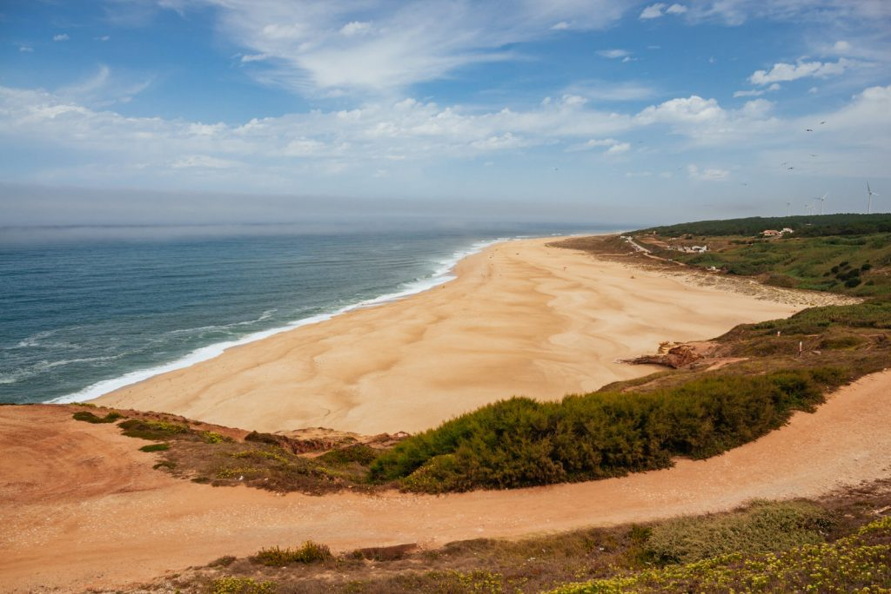
D’estate le acque dell’oceano sono tranquille e potete fare il bagno, ma dovete sempre stare attenti alle forti correnti presenti in questo tratto della costa portoghese.
D’inverno invece lo scenario è quasi apocalittico, le onde arrivano all’altezza del faro e vengono cavalcate dai surfisti più folli. Il record oggi è datato gennaio 2018 e surfista ha cavalcato un’onda di 24,38m di altezza, ma le onde possono arrivare anche a 35m. È un’esperienza che renderà il viaggio in Portogallo in macchina degno di memoria.
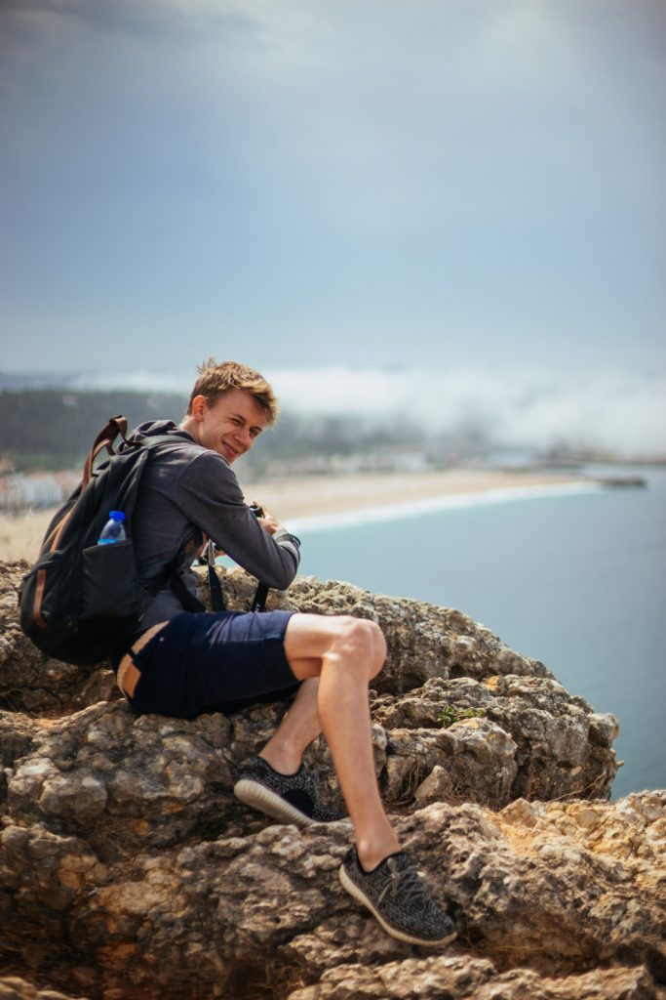
Giorno 7-8: Sintra
Arrivati nella fiabesca città di Sintra, facile da raggiungere anche in treno da Lisbona, guardatevi attorno. Ammirate le colline circostanti costellate di castelli e ville da sogno e guardate le decorazioni degli edifici che vi circondano, sono tutte diverse.
Sintra sa raccontarsi, affascina il visitatore e ammalia l’osservatore. Due giorni non bastano per scoprirla tutta, sono solo un’assaggio.
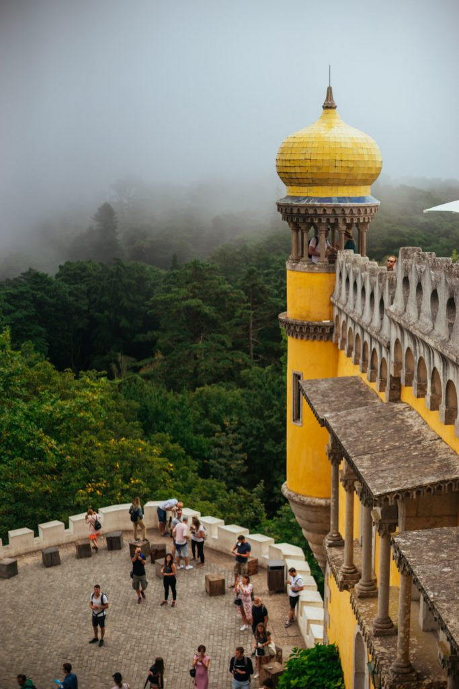
Dopo esservi persi nei meandri della vostra immaginazione, tornate alla vita reale. Incamminatevi verso il Palácio Nacional de Sintra e visitate il centro storico e il paesaggio culturale che nel 1995 è stato dichiarato Patrimonio dell’Umanità dall’UNESCO.
L’indomani recatevi all’interno del colorato Palácio Nacional da Pena e visitate il suo parco fino alla Cruz Alta; vagate per il Castelo dos Mouros, visitate Quinta da Regaleira e l’arabeggiante Palácio de Monserrate.
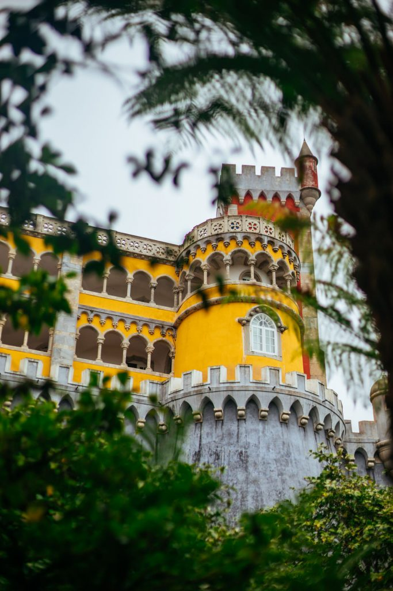
Purtroppo non esiste un biglietto cumulativo per visitare tutti i palazzi e i parchi della città di Sintra, ognuno ha la propria biglietteria. Il nostro consiglio è di acquistare i biglietti online e recarsi al Palácio Nacional da Pena, il più affollato e visitato, poco prima dell’orario di apertura o prima dell’orario di chiusura.
Giorno 8: Cabo da Roca
A pochi chilometri da Sintra si trova Cabo da Roca, definito il punto più a ovest del mondo fino al Secolo delle Scoperte; oggi è definito il punto più a ovest dell’Europa continentale. Inutile dire che è uno dei punti turistici per eccellenza del Portogallo, è visitato ogni giorno da migliaia di turisti che arrivano in corriera dalla capitale, Lisbona.
Il panorama della scogliera è molto suggestivo. Il promontorio è aspro e battuto dal vento, il faro bianco costruito sul punto più alto contrasta con il prato di arbusti verdi sottostante.
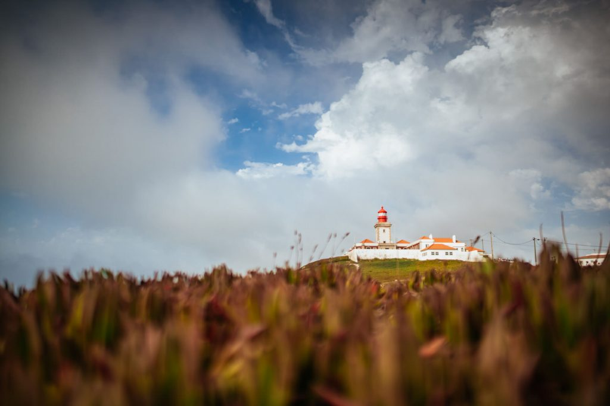
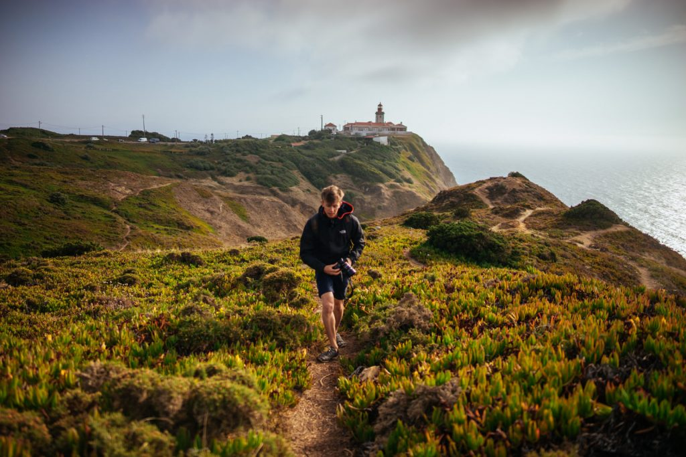
Il vero motivo per il quale dovreste visitare questa zona è andare a Praia da Ursa, secondo noi la spiaggia più bella tra quelle che abbiamo potuto vedere nel nostro tour del Portogallo in macchina.
Per raggiungere questo spettacolo della natura dovete affrontare una camminata di circa mezz’oretta in un sentiero sterrato e non semplice da praticare; vi consigliamo di portare le scarpe da ginnastica.
L’atmosfera all’ora del tramonto è indescrivibile a parole: le rocce candide diventano dorate come la sabbia che inizia a brillare e l’acqua dell’oceano diventa sempre più scura e tenebrosa. Solo il ricordo fa venire i brividi dall’emozione.

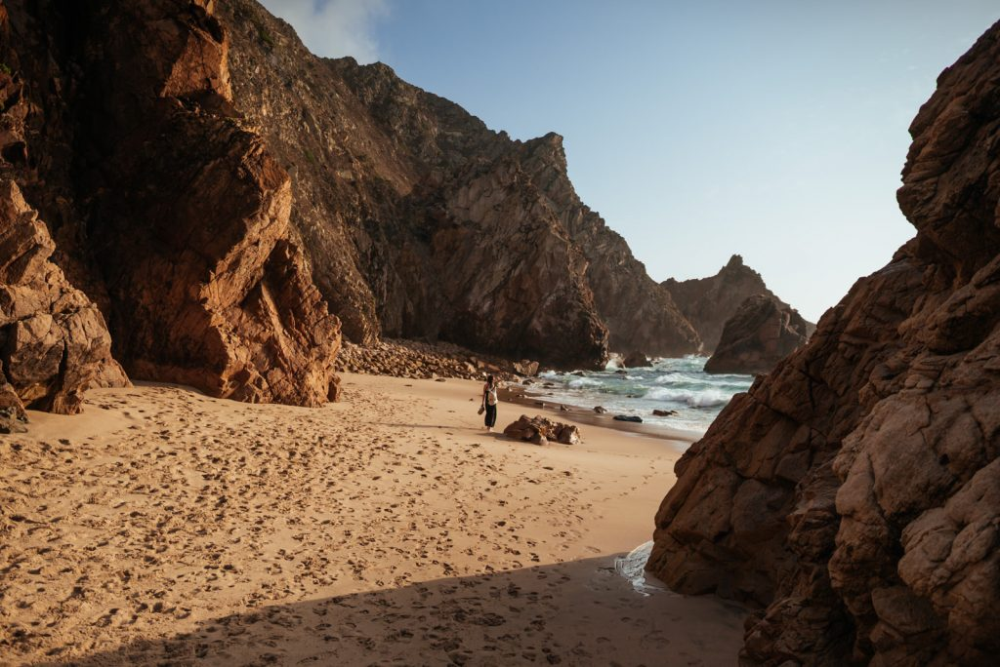
Giorno 9-10: Sesimbra
Sesimbra è un paesino di pescatori situato a sud di Lisbona, tra due importanti parchi naturali portoghesi.
Il centro della cittadina si visita in poche ore ma la zona circostante merita una sosta più lunga, almeno due giorni. Sesimbra è caratterizzata da casette candide che si affacciano su strette stradine, come tutti i paesini di mare più tipici. La differenza che rende Sesimbra speciale è data dal fortissimo legame che questo paese ha con l’oceano; la fortezza che guarda l’oceano e le pareti delle case che descrivono il mare o la vita dei pescatori tramite impegnativi murales, graffiti e opere d’arte.
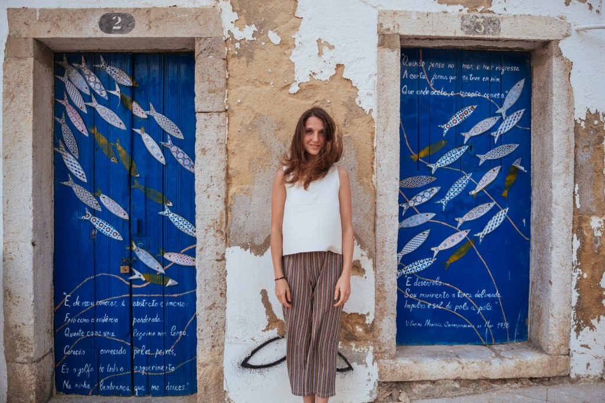
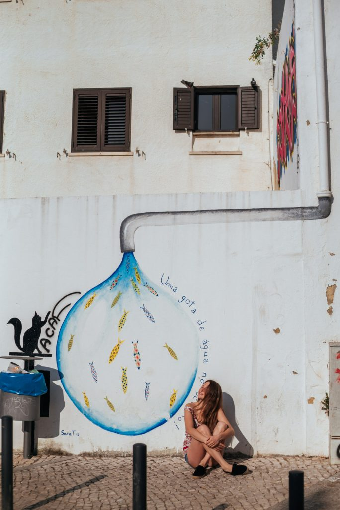
Sesimbra è circondata da spiagge fantastiche dove potete passare una giornata a rilassarvi, coccolati dal rumore delle onde dell’oceano. Fate attenzione, posizionatevi con l’ombrellone abbastanza lontano dall’acqua, la mattina la marea è bassa ma nel pomeriggio sale velocemente di qualche metro.
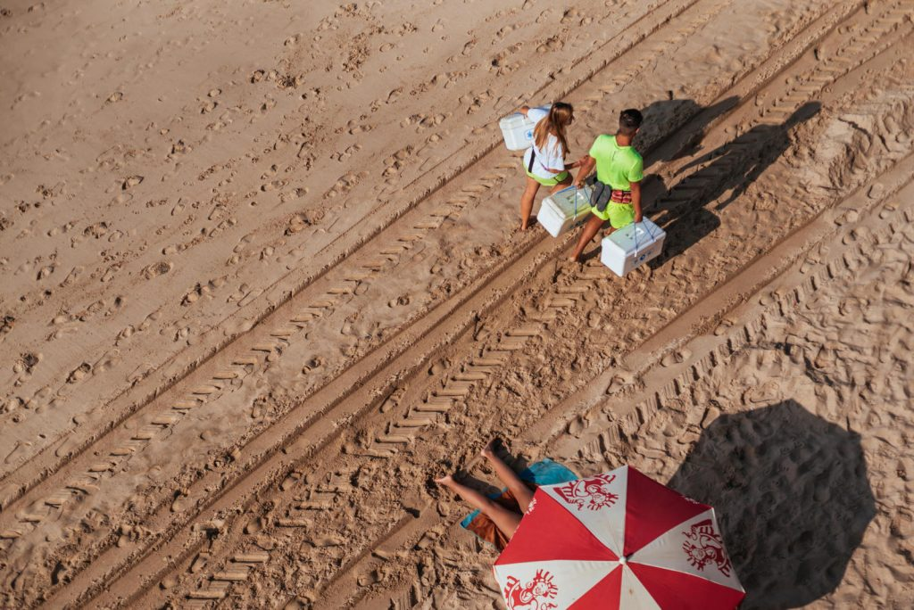
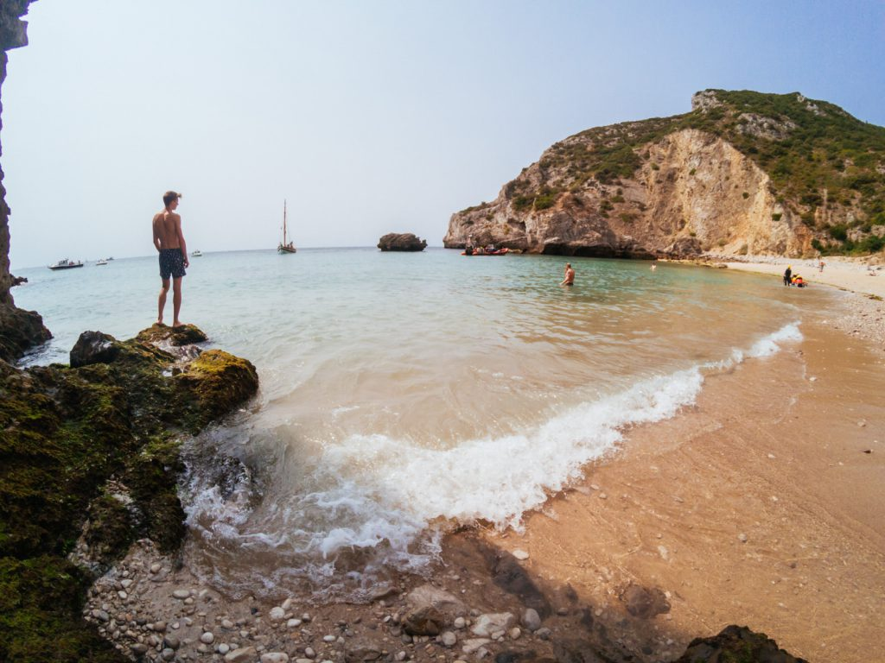
Il paesino diventa magico all’ora di cena, si vede il sole che cala dietro il promontorio e colora di rosa i muri bianchi delle case. Durante tutto il nostro tour del Portogallo in macchina non abbiamo trovato paesini di mare confrontabili con Sesimbra per il suo fascino e tradizione. Qui abbiamo mangiato i migliori piatti di pesce e un fantastico hamburger. Solo ripensandoci ci viene l’acquolina in bocca.
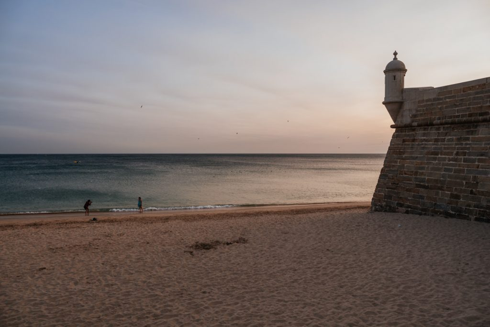
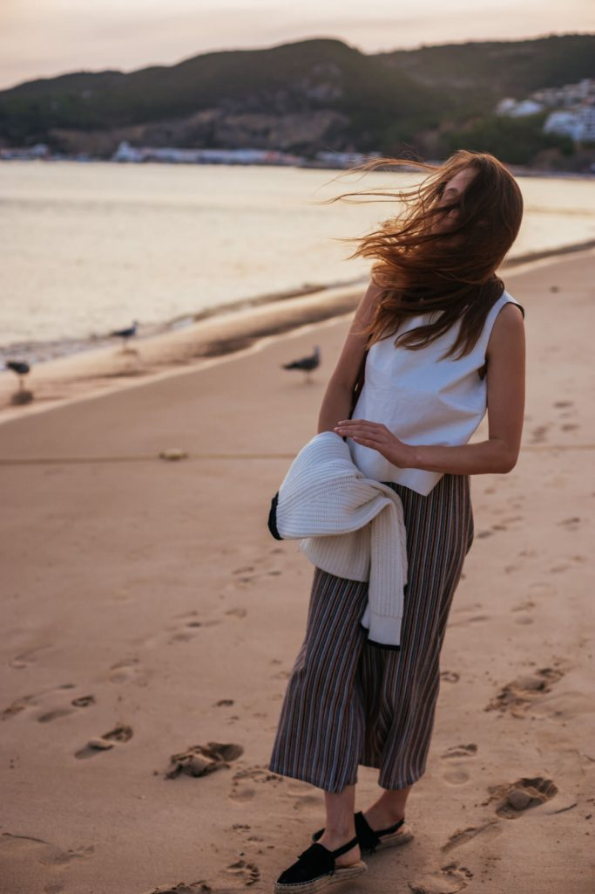
Giorno 10-11-12: Lagos, Portimão e Sagres
Dopo una sosta rigenerante a Sesimbra siamo partiti alla volta di Lagos. Da Sesimbra a Lagos in autostrada sono circa 3 ore di auto, senza soste.
Arrivati a Lagos ci siamo fatti coccolare dall’atmosfera estiva: temperatura elevata, clima arido e acqua dell’oceano perfetta per fare il bagno.
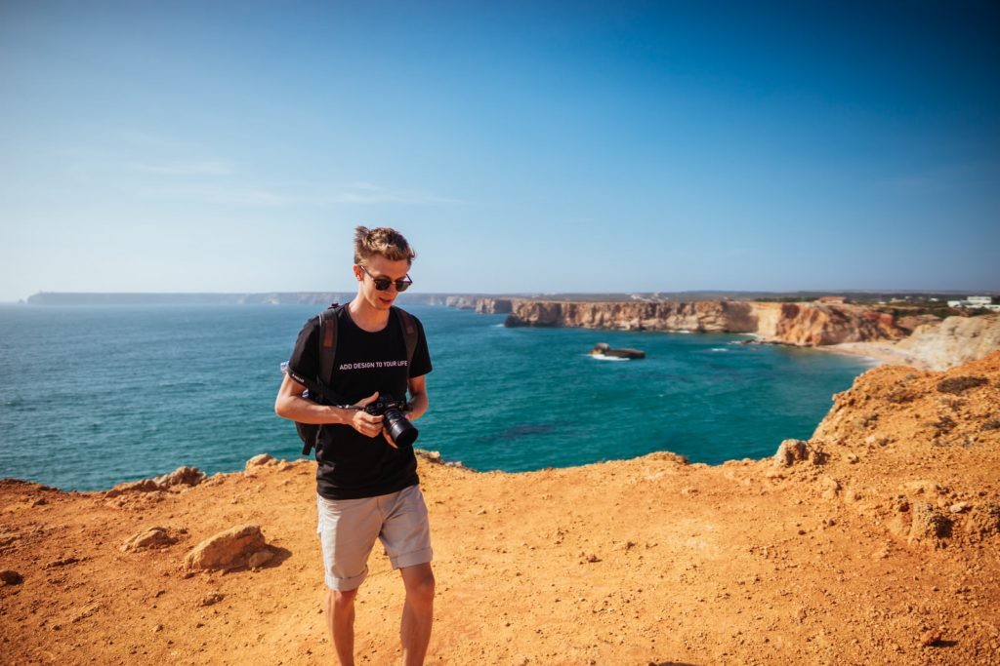
La cittadina di Lagos è molto turistica, l’offerta di alloggi, ristoranti, negozi e attività di svago è molto elevata. Nonostante ad agosto la città sia molto caotica, la zona del porto turistico e la spiaggia antistante sono due punti molto piacevoli dove passeggiare tranquillamente al tramonto.
Lagos è il punto ideale per iniziare ad esplorare il meraviglioso Distretto dell’Algarve, con le sue scogliere incandescenti e l’oceano blu zaffiro. Dal centro partite alla scoperta della vicina spiaggia di Dona Ana, una delle più belle di tutta la costa, di Praia do Camilo e Ponta da Piedade caratterizzata da particolari grotte. Dall’altro lato invece avventuratevi nel territorio di Portimão e esplorate una delle grotte più belle del mondo, Benagil, e Praia da Marinha, considerata la più bella del Portogallo.
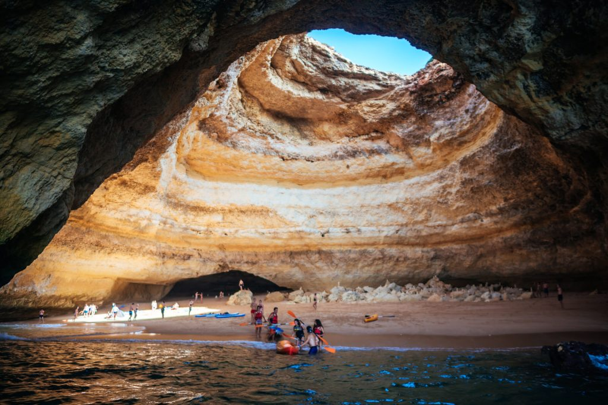
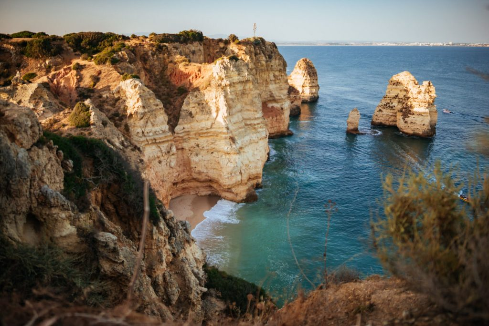
Sagres e Cabo de São Vicente distano circa un’ora di macchina da Lagos. I due fari sono rivolti verso l’Oceano Atlantico e dalla punta estrema dei promontori si gode di un panorama mozzafiato. In questa zona, molto aspra, priva di alture e rivolta verso l’oceano aperto, il vento freddo batte costantemente.
La sensazione è quella di essere alla fine del mondo, con le scogliere impervie che scendono ripide nelle acque fredde e le forti onde che si rompono contro le rocce granitiche e l’arenaria rossa e gialla.
Giorno 12: Costa Vicentina, in macchina verso Lisbona
Il viaggio in Portogallo in macchina di Kiwi sta per terminare, è giunta l’ora di partire in direzione Lisbona, la capitale di questo meraviglioso Stato.
Per risalire da Lagos a Lisbona abbiamo deciso di percorrere la strada costiera che passa attraverso il Parque Natural do Sudoeste Alentejano e Costa Vicentina per fare qualche sosta. Il viaggio è impegnativo in quanto la strada non è tenuta in perfette condizioni ma il panorama è fantastico.
La prima tappa è stata Praia do Amado per poi salire fino a Praia da Arrifana; qui l’oceano domina con acque fredde e vento costante.
Il viaggio prosegue con il villaggio di Odeceixe, che si affaccia su un’ampissima spiaggia adatta per le famiglie e ai surfisti principianti, e successivamente con Vila Nova de Milfontes, paese turistico caratterizzato da una spiaggia di sabbia fine.
La giornata si è conclusa con il tramonto su Lisbona visto dal Santuario Nacional de Cristo Rei e con il passaggio in macchina sul rosso Ponte 25 de Abril. Passare in auto sopra al “Golden Gate” europeo fa venire i brividi; la strada è molto trafficata e le auto viaggiano sopra a delle grate metalliche molto rumorose, tanto che il suono arriva fino a Belém.
Le tappe del nostro tour del Portogallo in macchina sono terminate, è ora di restituire l’automobile e avventurarsi alla scoperta di una nuova giungla cittadina.
Giorno 13-14-15: Lisbona
Lisbona è conosciuta in tutto il mondo per la sua storia di scoperte e conquiste, oggi risulta essere uno dei poli di sviluppo architettonico e artistico più all’avanguardia d’Europa.
A Lisbona inserite il freno e godetevi ogni singolo passo che fate.
Visitate il centro città passeggiando da Praça Rossio fino all’enorme Praça do Comércio, passando per il Convento do Carmo e l’Elevator de Santa Justa.
Perdetevi tra i negozi vintage e di design del Bairro Alto, rilassatevi passeggiando al Giardino Botanico e appassionatevi del Fado di Lisbona visitando la Fondazione Amália Rodrigues.
Al tramonto recatevi all’Alfama, vagate tra le stradine e scegliete uno dei tanti Miradouro per vedere il sole scendere dietro la città. Sarà uno dei momenti indimenticabili di tutto il vostro tour del Portogallo in macchina.
Una mattina svegliatevi presto e recatevi a Belém per respirare l’aria del fiume Tago in solitaria.
Dalla Torre di Belém incamminatevi verso il Monumento delle Scoperte e la sua enorme Rosa dei Venti. A questo punto entrate presso il Mosteiro dos Jerónimos e al termine della visita premiatevi con l’autentica Pastel de Nata presso Pasteis de Belém.
Dopo esservi ricaricati di energia potete visitare il futuristico MAAT, Museo dell’Arte Architettura e Tecnologia.
Se durante la visita alla città volete accedere a mostre e musei, vi consigliamo di fare la Lisboa Card, una tessera che permette l’entrata gratuita o ridotta a molte attrazioni e vi permette di muovervi gratuitamente con i mezzi pubblici.
Cliccando qui potete acquistare la vostra personale tessera Lisboa Card.
Per pranzo prendete il Tram 15E e recatevi all’LX Factory: avete l’imbarazzo della scelta. Dopo esservi saziati lasciatevi ispirare dai negozi di design e vintage presenti in quest’area alternativa. Qui, da Landeau, trovate la miglior torta al cioccolato al mondo: provare per credere!
Il viaggio in Portogallo in macchina è giunto al termine, utilizzando la linea rossa della metropolitana raggiungete l’Aeroporto Humberto Delgado. È ora di tornare a casa!
Autostrade in Portogallo:
Se volete viaggiare in Portogallo in macchina usufruendo dell’autostrada dovete informarvi prima online oppure presso il centro di noleggio dell’automobile sul pagamento del pedaggio autostradale.
In Portogallo non sono presenti caselli e non è previsto il pagamento immediato tramite contanti. Il sistema di controllo utilizza il riconoscimento delle targhe e addebita direttamente l’importo al proprietario intestatario dell’automobile.
Il metodo più semplice è richiedere presso l’agenzia di noleggio la Via Verde, il corrispondente del nostro Telepass, ad un costo aggiuntivo minimo ma che vi evita molti problemi. Per viaggiare utilizzando la Via Verde dovete seguire la corsia di sinistra quando indicato, in questo modo il pagamento avverrà in automatico.
Un altro metodo di pagamento del pedaggio è l’utilizzo di carte prepagate come la Toll Card e la Easy Toll con un importo fisso all’interno.
Se non volete utilizzare uno di questi metodi il pedaggio può essere pagato presso gli Uffici Postali dal giorno successivo al passaggio ed entro 5 giorni lavorativi.
Per il nostro viaggio in Portogallo in macchina abbiamo utilizzato la Via Verde e ci siamo trovati benissimo! Ve la consigliamo fortemente per evitare incomprensioni e brutte sorprese 😉
Cosa mettere in valigia?
Un tour del Portogallo in macchina dal punto di vista dell’abbigliamento è impegnativo. Il clima è molto diverso, da Porto all’Algarve e anche dall’oceano all’entroterra, per la forte influenza dell’Oceano Atlantico e delle catene montuose interne.
Il nord del Paese è molto umido, spesso la mattina è presente una fitta e fredda nebbia che sale dall’oceano mentre il sud è caratterizzato da un clima più caldo e secco.
In tutto il Portogallo è presente una forte escursione termica tra il giorno e la notte, ci sono anche 5-10°C di differenza d’estate. Un’altra costante climatica lungo la costa è la presenza del vento, spesso molto freddo, che proviene dall’oceano.
Il nostro consiglio è di mettere in valigia una giacca a vento e un maglioncino pesante o un pile anche d’estate, per il nord e la costa. A noi hanno letteralmente salvato la vita.
A sud e nell’entroterra la temperatura può raggiungere anche i 40°C, portatevi vestiti leggeri e una borraccia per l’acqua, in Portogallo l’acqua è quasi sempre potabile. Ricordatevi che anche questa zona è soggetta a forti sbalzi di temperatura giornalieri.
Dove abbiamo alloggiato?
Per vivere al meglio il viaggio, parlare con persone del posto e farci dare qualche consiglio, abbiamo alloggiato per la maggior parte delle notti in stanze private in appartamenti condivisi.
Siccome il viaggio è stato lungo e condividere gli spazi con sconosciuti non è sempre facile, abbiamo deciso di passare qualche notte in agriturismi o appartamenti privati tra i quali vogliamo consigliarvi Casa do Vale; un B&B a gestione familiare tra le colline che circondano Tomar, precisamente ad Alverangel.
Se avete la possibilità vi consigliamo anche di provare ad alloggiare in una Pousadas, abitazioni tradizionali portoghesi.
Libri da leggere prima di partire per il tour in Portogallo in macchina
Vi consigliamo una selezione di libri che abbiamo letto prima di partire e consideriamo molto utili per viaggiare con consapevolezza di quello che si sta vedendo e vivendo.
- Viaggio in Portogallo – José Saramago: un excursus storico e culturale del Portogallo per partire con la mentalità di affrontare un viaggio di scoperte e di programmi ma soprattutto un viaggio interiore.
- Lisbona quello che il turista deve vedere – Fernando Pessoa: guida alternativa scritta nel 1925 dal famoso autore portoghese ma ancora perfettamente attuale.
- Poeti di Lisbona – Leonor Simas-Almeida (Brown University): interessante raccolta di poesie dei migliori autori portoghesi. Scritte in portoghese con traduzione a fronte.
- Portogallo – Lonely Planet: guida dettagliata, perfetta per delineare le principali mete del vostro viaggio e conoscere gli usi, i costumi e le informazioni più tecniche.
Ora che il tour è completato e che il nostro flashback è terminato, possiamo confessarvi entrambi che questo viaggio lo rifaremmo altre mille volte, aggiungendo qualche sosta in più che questa volta il tempo limitato non ce l’ha permesso.
Se avete qualsiasi domanda o curiosità riguardo questo viaggio scriveteci, non vediamo l’ora di rispondere alle vostre domande! 🙂
Per il momento vi auguriamo buon viaggio e mi raccomando, fateci sapere come va la vostra avventura on the road! 😉
Articolo scritto nel 2018 e aggiornato a dicembre 2021.


![“A Lanzarote”. Un’isola, uno stile di vita, uno spazio in cui umanità e natura hanno imparato a convivere, fino ad oggi. “A Lanzarote” è una lode all’equilibrio che punta a far riflettere sul ruolo della natura per la nostra esistenza e di come, in un futuro sempre più imprevedibile, ci sia la necessità di ritrovare una relazione con le meraviglie naturali che ci circondano. “A Lanzarote” vuole essere un’inizio di un percorso che vede la combinazione di natura, design e artigianato locale per promuovere una mentalità di viaggio e vita sostenibili. Questo è Kiwi sotto un’altra veste, la nostra.🌊 Short Film ambientato a Lanzarote (Canarie, Spagna) è stato realizzato da @federico.girotto e @valentinalovat durante il periodo di quarantena, aprile 2020, utilizzando materiali registrati in passato.
Short film completo su IGTV🎞
#Lanzarote](../wp-content/plugins/instagram-feed/img/placeholder.png)
Guida utilissima ed esaustiva! Una piccola domanda: dovendo partire a breve con i miei amici alla volta del Portogallo (nel mese di agosto), ci suggerisci di prenotare con anticipo i luoghi dove soggiornare per la notte oppure è più comodo farlo “on the road”?
Ciao Filippo, grazie mille per i complimenti e per averci contattato!:)
Dipende dalle tappe che volete fare, ma in generale ad agosto il Portogallo è molto frequentato – soprattutto l’Algarve -, per questo vi consiglierei di prenotare qualcosa prima. Tutto dipende anche da quanti siete.
Valentina
Guida efficiente,chiara e dettagliata..accompagnata con foto che fanno innamorare..pazzesche! WOW!! Bravi ragazzi !!!
Avrei intenzione con la mia ragazza di fare un road trip nel mese di maggio/giugno..consigliate di prenotare dove soggiornare prima di partire o è un periodo calmo che può permettere di farlo sul loco?
Grazie
Ciao! Grazie di cuore per i complimenti, sono felicissima che tu abbia trovato utile la nostra guida. Il Portogallo è una meta molto gettonata durante tutto l’anno, se hai desideri sui posti in cui alloggiare ti consiglio di prenotare prima, altrimenti visto il periodo puoi andare alla cieca. Nonostante questo fossi in te prenoterei almeno a Lisbona e per le mete che visiterai durante i weekend.
Grazie bellissima guida dettagliata
Io e il mio compagno vorremmo fare un giro simile a giugno. Ma la domanda più importante è: a quale compagnia di noleggi rivolgerci? In precedenza io avevo noleggiato con EuRopcar ma non mi ero trovata super bene. Consigli?
Ciao Giulia, grazie per io commento! Che bel viaggio e giugno è un ottimo periodo! Noi per questo viaggio abbiamo noleggiato l’auto con Europecar perchè in quel periodo e prenotando quasi all’ultimo risultava la compagnia con la migliore offerta, valutando qualità/prezzo e assicurazione. Ammetto che nemmeno noi siamo grandi fan di Europecar e Avis e di solito le evitiamo sempre cercando alternative locali.
Buon viaggio!
Valentina
Grazie mille Valentina per averci fatto assaporare il Portogallo attraverso le vs foto e il vs racconto! A luglio partirò anch’io per fare la costa da Lisbona all’Algarve e sto riscontrando parecchie difficoltà nel noleggio auto nel senso che sembra che tutti vogliano farti sottoscrivere la loro assicurazione dicendo che quella stipulata online (quella completa) sia nulla e quindi si finisce per pagare il doppio. Cosa mi potete dire a riguardo? Vi ringrazio
Complimenti per questo articolo!!! dettagliato, completo e preciso…di grandissima utilità!!!! Bravissimi
Ciao Paola, grazie mille 🙂
Ciao ragazzi, ho letto il racconto del vostro viaggio in Portogallo con la macchina, mi è piaciuto a tal punto che quest’anno, con il mio ragazzo, abbiamo deciso di fare lo stesso anche noi. Volevo chiedervi per quanto riguarda il noleggio dell’auto, l’avete fatto prima di partire oppure noleggiata direttamente in aeroporto?
Lo stesso vorrei sapere per quanto riguarda il pernottamento.
Aspetto vostre gentili informazioni, vi ringrazio 🤗
Ciao Roberta! Grazie! Noi abbiamo prenotato quasi tutto da casa perché agosto è alta stagione e soprattutto in città e nelle mete più turistiche è difficile trovare alloggi in loco ad un buon prezzo all’ultimo momento. Ma quest’anno è tutto un po’ diverso.
Per la macchina lo stesso, abbiamo prenotato da casa.
Buone vacanze:)
perfetto. Grazie
Ciao,bellissima guida la vostra dove sicuramente attingerò per il mio prossimo viaggio!Una domanda, ma si paga un supplemento per il noleggio a Porto e la restituzione a Lisbona? E ancora consigliereste qualche notte in tenda o fa freddo di notte? grazie
Ciao Ester! Sì, esatto! Si paga un supplemento per il viaggi di sola andata. La notte in tenda è sicuramente suggestiva ma non avendola mai provata non saremmo le persone giuste a poterti dare dei consigli. Le temperature in estate sono miti, al sud fa più caldo che al nord, ma la sera sale la brezza un po’ fresca. Grazie mille e buona organizzazione del tuo viaggio on the road 🙂
ciao, viaggio molto bello e articolo molto ben scritto!
una domanda: con chi avete noleggiato l’auto? una compagnia locale? potreste dire indicativamente quanto avete speso per il noleggio con il supplemento? Grazie!
Ma che brava, che bravi! Stavo proprio cercando un Tour in auto del Portogallo che ho intenzione di fare nella prima settimana di luglio 2022. Vi ringrazio per le chiare ed ampie indicazioni (ed illustrazioni) di dettaglio. Essendo un sommelier dedicherò anche una visita più specifica ad una cantina a Porto.
Ciao ho solo un dubbio, dopo a lagos dove avete soggiornato? direttamente a lisbona?
Ciao! Per lo più quali sono i costi dei pedaggi per le autostrade?
Ciao =) mi chiamo Enrica, io e un mio amico stiamo cercando di fare un viaggio in Portogallo itinerante e mi sono imbattuta nel tuo blog, e mi è piaciuto molto. Siccome stiamo raccogliendo le info siamo arrivati al punto della prenotazione dell’auto. ho fatto un preventivo e per quattro giorni viene fuori circa !80 Euro per tutto il noleggio. Voi che sito avete consultato ? piu o meno quanto avete speso come noleggio? avete dei suggerimenti?
Buongiorno, un tour bellissimo… una meraviglia per gli occhi immagino. Noi partiamo a fine gennaio 1 settimana e abbiamo una bimba di 2 anni. Arriviamo a porto e ripartiamo da lisbona tot 7 notti.
Secondo te è più pratica la macchina? Si porta bene e i parcheggi sono facili da trovare?
Secondo te quali sono le tappe che proprio non posso perdermi?
Grazie!!!!!
Roberta
Grazie mille per questa utilissima guida!
Mi trovo attualmente a Lisbona, ma è stata una decisione presa praticamente all’ultimo momento, e non ho programmato dettagliatamente il viaggio; ogni consiglio scritto risulta quindi molto prezioso.
Il Portogallo è davvero un paese affascinante, da scoprire fino in fondo, e grazie ai vostri suggerimenti ho aggiunto qualche tappa in più.
Grazie anche per gli ottimi consigli di letture da acquistare, né farò tesoro per la prossima volta in cui tornerò in questa magnifica terra :).
Ciao Valentina e complimenti per la bellissima e dettagliata descrizione del viaggio.
Io ho gia’ fatto tutta la circumnavigazione della Penisola Iberica in macchina molti anni fa…ma avevo molti piu’ giorni di vacanza.
Adesso vorrei fare come voi…concentrarmi solo sul Portogallo…che anche per me e’ stata una esperienza meravigliosa.
Una domanda:
A chi devo rivolgermi per l’auto One Way…prenderla a Oporto e lasciarla a Lisbona?
Ti ringrazio anticipatamente e ti saluto.
Ciao.
Ciao Valentina un consiglio vorrei andare in Portogallo e le date disponibili per me sono dal 17 settembre al 1 di ottobre,ho visto voli per Lisbona e arrivano tutti in tarda serata per quelle date quindi perdo un giorno,ed il 1 di ottobre avrei solo un paio d’ore disponibili prima di ripartire,che l’itinerario mi consigli? E quanto giorni per tappa?😅 A me piace molto visitare cose ,anche naturali archeologiche e centri città scattare foto ecc..
Ciao Valentina un consiglio, vorrei visitare il Portogallo dal 17 settembre al 1 di ottobre Lisbona con rientro a Lisbona, il 17 la perdo come giornata perché arriverei in tarda serata.qualche consiglio su itinerario e quanti giorni dovrei fermarmi per ogni tappa. Mi piace l’architettura,la natura anche fotografare il centro con le cose tipiche, monumenti,chiese ecc.
Sarò monotona ma anche io, imbattuta mi nella vostra descrizione del Portogallo sono rimasta ammaliata! È da anni che sogno questa terra e quest’estate (purtroppo ad agosto) andremo in quattro, io, il mio compagno e i nostri due ragazzini. Ovviamente andremo un pò al risparmio e dovremo cercare posti nei campeggi col nostro mezzo che ci accompagnerà anche alle varie destinazioni! Pensavo però di trovare location per passare qualche notte soprattutto in prossimità delle città più importanti, sapete darmi qualche indicazione di strutture non costose, semplici ma pulite in città come Lisbona, Porto, Coimbra? Grazie e ancora complimenti per il bellissimo post!
ciao Valentina bellissimo questo itinerario, volevo dei consigli devo andare in Portogallo per 15 giorni a settembre partirò il 17, arrivo a Lisbona e mi fermo 2 giorni e mezzo poi prendo l’auto e da qui iniziano i miei dubbi se andare priva verso sud o prima salire verso nord. e soprattutto che tappe fare e quanti giorni a tappa, vorrei arrivare a vedere porto e nel sud l’algarve. grazie in anticipo per i consigli.
E se ti dicessi che vorrei fare il tour al contrario? Da Lisbona a Porto. Tempo a disposizione: 6 giorni e mezzo. Che itinerario mi consiglieresti? Cosa tagliare?
Anche io sarei interessata a questa domanda per lo stesso motivo 🙂
Ciao ragazzi, ottima guida volevamo io e la mia ragazza proprio fare una cosa del genere, solo una domanda, sapreste dirci indicativamente una spesa totale per un viaggio del genere a testa? Solo per avere meglio un’idea, in quanto abbiamo per ora viaggiato poco causa studio, ma adesso rimedieremo, spero in una vostra risposta. Grazie ancora
Bellissimo il vostro diario di viaggio! Ma se uno volesse fare una versione “Bignami” e economica del vostro viaggio diciamo in 5 giorni, sempre da porto a Lisbona, cosa consigliereste di fare? Sono certo che dovere eliminare delle cose non deve essere facile, ma in una versione proprio basic cosa consigliereste? E in che zone magari fare le soste e dormire? Grazie mille!